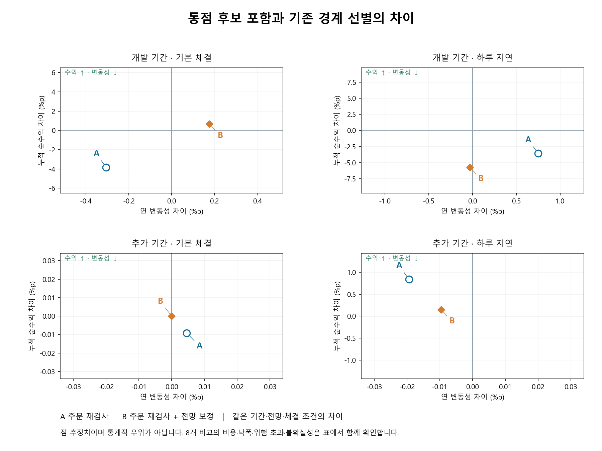

전체 8개 대응 비교 · 과거 개발 자료
동점인 종목을 모두 비교하면
순수익과 위험이 달라질까?
기존 방법은 국가별 상위 20개 경계에서 같은 점수를 받은 종목을 종목 코드 순서로 골랐습니다. 수정안은 경계의 동점 종목을 모두 포함합니다. 저장된 전망·위험 정책·비용·체결 조건은 그대로 두고 후보 선택의 영향만 비교했습니다.
아래 개수는 관측된 점 추정치입니다. 기간별 계좌를 합치거나, 일부 좋은 조건만으로 개선을 판단하지 않습니다.
위 개수에는 반올림하면 0.00%p인 작은 수치 차이도 포함됩니다. 개수만으로 경제적 의미나 통계적 우위를 판단하지 않습니다.
391일 개발 기간에서 순수익이 높아진 조건은 1/4개입니다. 전체 8개 중 체결 후 위험 제약 초과일이 늘어난 조건은 3개입니다. 후보 수 확대만으로 순수익과 위험이 함께 개선된다고 볼 수 없습니다. 독립 자료와 미래 운용 검증도 아직 충족하지 않았습니다.
개발 기간: 2024.10.01–2026.03.31, 391개 판단일. 추가 기간: 2026.04.01–06.05, 48개 판단일. 각 계좌는 1억 원에서 별도로 시작합니다. 수정가격 기준 연구 수량을 사용하며, 100만원 정수 주수 적립식 실험과는 별개입니다. 수익은 원화 누적 순수익이며 거래·환전 비용을 반영합니다. 2026.10.09 비용 가정을 과거에 적용했고 개인별 소득세는 제외했습니다.

같은 조건에서 얼마나 달라졌나
| 조건 | 누적 순수익 차이 | 연 변동성 차이 | 최대 낙폭 차이 | 거래·환전 비용 차이 | 모든 위험 제약 초과일 차이 |
|---|---|---|---|---|---|
| 개발 기간 · 기본 체결 · A · 주문 재검사 | -3.83%p | -0.31%p | -0.24%p | 134,181원 | +35일 |
| 개발 기간 · 기본 체결 · B · 주문 재검사 + 전망 보정 | +0.67%p | +0.18%p | +0.12%p | 706,967원 | +0일 |
| 개발 기간 · 하루 지연 · A · 주문 재검사 | -3.56%p | +0.75%p | -2.91%p | 276,853원 | +13일 |
| 개발 기간 · 하루 지연 · B · 주문 재검사 + 전망 보정 | -5.72%p | -0.03%p | +1.02%p | 583,216원 | +9일 |
| 추가 기간 · 기본 체결 · A · 주문 재검사 | -0.01%p | +0.00%p | -0.01%p | -474원 | +0일 |
| 추가 기간 · 기본 체결 · B · 주문 재검사 + 전망 보정 | -0.00%p | -0.00%p | +0.00%p | 0원 | +0일 |
| 추가 기간 · 하루 지연 · A · 주문 재검사 | +0.84%p | -0.02%p | +0.01%p | 7,842원 | -3일 |
| 추가 기간 · 하루 지연 · B · 주문 재검사 + 전망 보정 | +0.15%p | -0.01%p | +0.06%p | 14,086원 | +0일 |
최대 낙폭은 음수로 표시하므로 차이가 양수이면 낙폭이 줄었습니다. 비용 차이가 음수이면 비용이 줄었습니다. 초과일 차이가 음수이면 위험 제약을 넘은 날이 줄었습니다.
16개 계좌의 수익·위험·비용
| 조건 · 선별 | 누적 순수익 | 연 변동성 | 최대 낙폭 | 평균 주식 비중 | 최대 종목 비중 | 매매 비용 | 환전 비용 | 초기 자산 대비 거래액 | 누적 미체결 금액 |
|---|---|---|---|---|---|---|---|---|---|
| 개발 기간 · 기본 체결 · A · 주문 재검사 · 기존 경계 선별 | 47.72% | 11.46% | -7.25% | 47.33% | 5.74% | 3,786,277원 | 347,537원 | 23.97배 | 3,440,267원 |
| 개발 기간 · 기본 체결 · A · 주문 재검사 · 동점 후보 포함 | 43.89% | 11.16% | -7.48% | 50.88% | 5.66% | 3,925,797원 | 342,198원 | 24.86배 | 2,625,698원 |
| 개발 기간 · 기본 체결 · B · 주문 재검사 + 전망 보정 · 기존 경계 선별 | 38.82% | 11.02% | -8.07% | 45.02% | 6.42% | 3,528,761원 | 299,670원 | 22.27배 | 2,358,502원 |
| 개발 기간 · 기본 체결 · B · 주문 재검사 + 전망 보정 · 동점 후보 포함 | 39.49% | 11.20% | -7.95% | 49.84% | 5.75% | 4,195,697원 | 339,701원 | 26.51배 | 2,042,573원 |
| 개발 기간 · 하루 지연 · A · 주문 재검사 · 기존 경계 선별 | 47.98% | 10.34% | -5.91% | 43.53% | 5.87% | 2,537,184원 | 250,403원 | 16.03배 | 1,646,632원 |
| 개발 기간 · 하루 지연 · A · 주문 재검사 · 동점 후보 포함 | 44.42% | 11.09% | -8.82% | 46.43% | 5.98% | 2,860,930원 | 203,510원 | 18.06배 | 1,512,486원 |
| 개발 기간 · 하루 지연 · B · 주문 재검사 + 전망 보정 · 기존 경계 선별 | 52.97% | 10.89% | -7.76% | 43.32% | 5.78% | 2,565,229원 | 232,395원 | 16.06배 | 700,048원 |
| 개발 기간 · 하루 지연 · B · 주문 재검사 + 전망 보정 · 동점 후보 포함 | 47.25% | 10.86% | -6.74% | 48.36% | 6.15% | 3,130,628원 | 250,213원 | 19.74배 | 876,544원 |
| 추가 기간 · 기본 체결 · A · 주문 재검사 · 기존 경계 선별 | 6.73% | 15.32% | -4.72% | 36.55% | 5.48% | 477,873원 | 23,437원 | 2.88배 | 0원 |
| 추가 기간 · 기본 체결 · A · 주문 재검사 · 동점 후보 포함 | 6.72% | 15.32% | -4.73% | 36.55% | 5.48% | 477,400원 | 23,437원 | 2.88배 | 0원 |
| 추가 기간 · 기본 체결 · B · 주문 재검사 + 전망 보정 · 기존 경계 선별 | 14.81% | 15.80% | -3.18% | 44.11% | 5.86% | 410,215원 | 42,463원 | 2.46배 | 0원 |
| 추가 기간 · 기본 체결 · B · 주문 재검사 + 전망 보정 · 동점 후보 포함 | 14.81% | 15.80% | -3.18% | 44.11% | 5.86% | 410,215원 | 42,463원 | 2.46배 | 0원 |
| 추가 기간 · 하루 지연 · A · 주문 재검사 · 기존 경계 선별 | 7.72% | 15.58% | -4.04% | 34.31% | 5.45% | 344,660원 | 26,227원 | 2.06배 | 0원 |
| 추가 기간 · 하루 지연 · A · 주문 재검사 · 동점 후보 포함 | 8.56% | 15.56% | -4.04% | 33.94% | 5.45% | 348,535원 | 30,194원 | 2.06배 | 0원 |
| 추가 기간 · 하루 지연 · B · 주문 재검사 + 전망 보정 · 기존 경계 선별 | 8.26% | 15.27% | -3.49% | 41.21% | 5.45% | 416,901원 | 42,578원 | 2.50배 | 56,531원 |
| 추가 기간 · 하루 지연 · B · 주문 재검사 + 전망 보정 · 동점 후보 포함 | 8.41% | 15.26% | -3.42% | 38.73% | 5.45% | 430,123원 | 43,442원 | 2.58배 | 0원 |
연 변동성은 일 수익률 표준편차 × √252입니다. 미체결 금액은 요청 누적값이므로 같은 자금의 여러 시도도 포함할 수 있습니다. 주식 비중과 집중도를 함께 봐야 현금 대기로 위험만 줄였는지 판단할 수 있습니다.
체결 후에도 위험을 지켰나
| 조건 · 선별 | 변동성·CVaR 초과 | 모든 위험 제약 초과 | 종목 8% 절대한도 초과 | 미해결 주문 계획 | 체결 후 목표 불일치 | 계산 실패 사건 |
|---|---|---|---|---|---|---|
| 개발 기간 · 기본 체결 · A · 주문 재검사 · 기존 경계 선별 | 0일 | 127일 | 0일 | 41일 | 33일 | 17건 |
| 개발 기간 · 기본 체결 · A · 주문 재검사 · 동점 후보 포함 | 0일 | 162일 | 0일 | 59일 | 27일 | 33건 |
| 개발 기간 · 기본 체결 · B · 주문 재검사 + 전망 보정 · 기존 경계 선별 | 1일 | 117일 | 0일 | 43일 | 28일 | 21건 |
| 개발 기간 · 기본 체결 · B · 주문 재검사 + 전망 보정 · 동점 후보 포함 | 0일 | 117일 | 0일 | 27일 | 23일 | 16건 |
| 개발 기간 · 하루 지연 · A · 주문 재검사 · 기존 경계 선별 | 1일 | 78일 | 0일 | 30일 | 19일 | 15건 |
| 개발 기간 · 하루 지연 · A · 주문 재검사 · 동점 후보 포함 | 1일 | 91일 | 0일 | 30일 | 19일 | 35건 |
| 개발 기간 · 하루 지연 · B · 주문 재검사 + 전망 보정 · 기존 경계 선별 | 2일 | 87일 | 0일 | 40일 | 15일 | 49건 |
| 개발 기간 · 하루 지연 · B · 주문 재검사 + 전망 보정 · 동점 후보 포함 | 1일 | 96일 | 0일 | 36일 | 14일 | 22건 |
| 추가 기간 · 기본 체결 · A · 주문 재검사 · 기존 경계 선별 | 5일 | 25일 | 0일 | 9일 | 0일 | 5건 |
| 추가 기간 · 기본 체결 · A · 주문 재검사 · 동점 후보 포함 | 5일 | 25일 | 0일 | 9일 | 0일 | 5건 |
| 추가 기간 · 기본 체결 · B · 주문 재검사 + 전망 보정 · 기존 경계 선별 | 12일 | 32일 | 0일 | 28일 | 0일 | 26건 |
| 추가 기간 · 기본 체결 · B · 주문 재검사 + 전망 보정 · 동점 후보 포함 | 12일 | 32일 | 0일 | 28일 | 0일 | 26건 |
| 추가 기간 · 하루 지연 · A · 주문 재검사 · 기존 경계 선별 | 3일 | 23일 | 0일 | 6일 | 0일 | 14건 |
| 추가 기간 · 하루 지연 · A · 주문 재검사 · 동점 후보 포함 | 2일 | 20일 | 0일 | 4일 | 0일 | 12건 |
| 추가 기간 · 하루 지연 · B · 주문 재검사 + 전망 보정 · 기존 경계 선별 | 3일 | 13일 | 0일 | 7일 | 2일 | 17건 |
| 추가 기간 · 하루 지연 · B · 주문 재검사 + 전망 보정 · 동점 후보 포함 | 1일 | 13일 | 0일 | 8일 | 0일 | 18건 |
위험 항목은 서로 겹치므로 합산하지 않습니다. 모든 위험 제약에는 종목·업종·시장·스트레스 등도 포함하며 기존 변동성·CVaR 검사와 허용 오차가 다릅니다. 계산 실패는 일수가 아닌 사건 수입니다. 목표 비중 불일치는 단독으로 위험 초과를 뜻하지 않습니다.
후보 수와 계산 시간
| 조건 | 판단일 | 확장된 시장·일 | 평균 후보 | 최대 후보 | 수정안 마지막 실행 구간 | 기존 실행 시간 |
|---|---|---|---|---|---|---|
| 개발 기간 · 기본 체결 · A · 주문 재검사 | 391일 | 277 시장·일 | 69.26개 | 128개 | 189.59분 | 미측정 |
| 개발 기간 · 기본 체결 · B · 주문 재검사 + 전망 보정 | 391일 | 277 시장·일 | 69.26개 | 128개 | 147.06분 | 미측정 |
| 개발 기간 · 하루 지연 · A · 주문 재검사 | 391일 | 277 시장·일 | 69.26개 | 128개 | 295.47분 | 미측정 |
| 개발 기간 · 하루 지연 · B · 주문 재검사 + 전망 보정 | 391일 | 277 시장·일 | 69.26개 | 128개 | 237.83분 | 미측정 |
| 추가 기간 · 기본 체결 · A · 주문 재검사 | 48일 | 6 시장·일 | 40.12개 | 41개 | 9.06분 | 미측정 |
| 추가 기간 · 기본 체결 · B · 주문 재검사 + 전망 보정 | 48일 | 6 시장·일 | 40.12개 | 41개 | 15.10분 | 미측정 |
| 추가 기간 · 하루 지연 · A · 주문 재검사 | 48일 | 6 시장·일 | 40.12개 | 41개 | 11.07분 | 미측정 |
| 추가 기간 · 하루 지연 · B · 주문 재검사 + 전망 보정 | 48일 | 6 시장·일 | 40.12개 | 41개 | 23.24분 | 미측정 |
시장·일은 한국과 미국을 따로 센 값입니다. 같은 날 양국이 확장되면 2로 세므로 판단일보다 클 수 있습니다. 후보 수는 양국 합계입니다. 시간은 입력 검증을 포함한 마지막 실행 구간의 측정값입니다. 중단 후 재개된 조건에서는 중단 전 계산 시간이 빠져 있으므로 전체 연구 소요 시간이나 조건 간 속도 비교에 사용할 수 없습니다. 기존 시간도 측정되지 않았습니다.
불확실성도 함께 보기
같은 날짜의 두 계좌를 10·20·60일 묶음으로 2,000회 재표본화한 95% 구간입니다. 이미 확인한 개발 자료의 설명용 구간이며 다중 비교를 보정하지 않았습니다. 아래 연환산 수익 차이는 위의 누적 순수익 차이와 다릅니다. 변동성 비율은 1배보다 작을 때 낮아진 것입니다.
| 조건 | 묶음 길이 | 연환산 수익 차이 | 수익 차이 95% 구간 | 변동성 비율 | 비율 95% 구간 | 구간 상태 | 126일 최소 관측 |
|---|---|---|---|---|---|---|---|
| 개발 기간 · 기본 체결 · A · 주문 재검사 | 10일 | -2.16%p | -12.93%p ~ +7.63%p | 0.973배 | 0.912배 ~ 1.035배 | 설명용 추정 | 충족 |
| 개발 기간 · 기본 체결 · A · 주문 재검사 | 20일 | -2.16%p | -13.52%p ~ +7.53%p | 0.973배 | 0.907배 ~ 1.033배 | 설명용 추정 | 충족 |
| 개발 기간 · 기본 체결 · A · 주문 재검사 | 60일 | -2.16%p | -14.49%p ~ +8.27%p | 0.973배 | 0.917배 ~ 1.028배 | 설명용 추정 | 충족 |
| 개발 기간 · 기본 체결 · B · 주문 재검사 + 전망 보정 | 10일 | +0.38%p | -9.31%p ~ +9.49%p | 1.016배 | 0.971배 ~ 1.085배 | 설명용 추정 | 충족 |
| 개발 기간 · 기본 체결 · B · 주문 재검사 + 전망 보정 | 20일 | +0.38%p | -8.65%p ~ +8.67%p | 1.016배 | 0.976배 ~ 1.072배 | 설명용 추정 | 충족 |
| 개발 기간 · 기본 체결 · B · 주문 재검사 + 전망 보정 | 60일 | +0.38%p | -8.04%p ~ +9.52%p | 1.016배 | 0.992배 ~ 1.056배 | 설명용 추정 | 충족 |
| 개발 기간 · 하루 지연 · A · 주문 재검사 | 10일 | -2.00%p | -11.65%p ~ +6.71%p | 1.072배 | 0.961배 ~ 1.180배 | 설명용 추정 | 충족 |
| 개발 기간 · 하루 지연 · A · 주문 재검사 | 20일 | -2.00%p | -12.79%p ~ +6.91%p | 1.072배 | 0.961배 ~ 1.176배 | 설명용 추정 | 충족 |
| 개발 기간 · 하루 지연 · A · 주문 재검사 | 60일 | -2.00%p | -15.15%p ~ +7.36%p | 1.072배 | 0.955배 ~ 1.167배 | 설명용 추정 | 충족 |
| 개발 기간 · 하루 지연 · B · 주문 재검사 + 전망 보정 | 10일 | -3.19%p | -13.86%p ~ +6.82%p | 0.997배 | 0.944배 ~ 1.083배 | 설명용 추정 | 충족 |
| 개발 기간 · 하루 지연 · B · 주문 재검사 + 전망 보정 | 20일 | -3.19%p | -11.58%p ~ +5.39%p | 0.997배 | 0.948배 ~ 1.076배 | 설명용 추정 | 충족 |
| 개발 기간 · 하루 지연 · B · 주문 재검사 + 전망 보정 | 60일 | -3.19%p | -11.18%p ~ +4.14%p | 0.997배 | 0.960배 ~ 1.064배 | 설명용 추정 | 충족 |
| 추가 기간 · 기본 체결 · A · 주문 재검사 | 10일 | -0.06%p | -0.13%p ~ +0.00%p | 1.000배 | 1.000배 ~ 1.001배 | 설명용 추정 | 미충족 |
| 추가 기간 · 기본 체결 · A · 주문 재검사 | 20일 | -0.06%p | -0.12%p ~ +0.00%p | 1.000배 | 1.000배 ~ 1.001배 | 묶음 수 적음 | 미충족 |
| 추가 기간 · 기본 체결 · A · 주문 재검사 | 60일 | -0.06%p | 계산 불가: 관측 기간 부족 | 1.000배 | 계산 불가: 관측 기간 부족 | 묶음 길이 이상 자료 없음 | 미충족 |
| 추가 기간 · 기본 체결 · B · 주문 재검사 + 전망 보정 | 10일 | -0.00%p | -0.00%p ~ -0.00%p | 1.000배 | 1.000배 ~ 1.000배 | 설명용 추정 | 미충족 |
| 추가 기간 · 기본 체결 · B · 주문 재검사 + 전망 보정 | 20일 | -0.00%p | -0.00%p ~ -0.00%p | 1.000배 | 1.000배 ~ 1.000배 | 묶음 수 적음 | 미충족 |
| 추가 기간 · 기본 체결 · B · 주문 재검사 + 전망 보정 | 60일 | -0.00%p | 계산 불가: 관측 기간 부족 | 1.000배 | 계산 불가: 관측 기간 부족 | 묶음 길이 이상 자료 없음 | 미충족 |
| 추가 기간 · 하루 지연 · A · 주문 재검사 | 10일 | +6.16%p | -0.11%p ~ +22.43%p | 0.999배 | 0.983배 ~ 1.011배 | 설명용 추정 | 미충족 |
| 추가 기간 · 하루 지연 · A · 주문 재검사 | 20일 | +6.16%p | +0.04%p ~ +19.35%p | 0.999배 | 0.982배 ~ 1.009배 | 묶음 수 적음 | 미충족 |
| 추가 기간 · 하루 지연 · A · 주문 재검사 | 60일 | +6.16%p | 계산 불가: 관측 기간 부족 | 0.999배 | 계산 불가: 관측 기간 부족 | 묶음 길이 이상 자료 없음 | 미충족 |
| 추가 기간 · 하루 지연 · B · 주문 재검사 + 전망 보정 | 10일 | +1.09%p | -2.29%p ~ +6.50%p | 0.999배 | 0.979배 ~ 1.023배 | 설명용 추정 | 미충족 |
| 추가 기간 · 하루 지연 · B · 주문 재검사 + 전망 보정 | 20일 | +1.09%p | -2.16%p ~ +6.55%p | 0.999배 | 0.990배 ~ 1.018배 | 묶음 수 적음 | 미충족 |
| 추가 기간 · 하루 지연 · B · 주문 재검사 + 전망 보정 | 60일 | +1.09%p | 계산 불가: 관측 기간 부족 | 0.999배 | 계산 불가: 관측 기간 부족 | 묶음 길이 이상 자료 없음 | 미충족 |